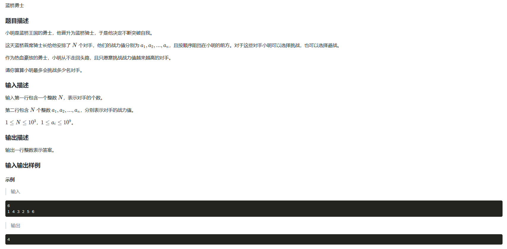
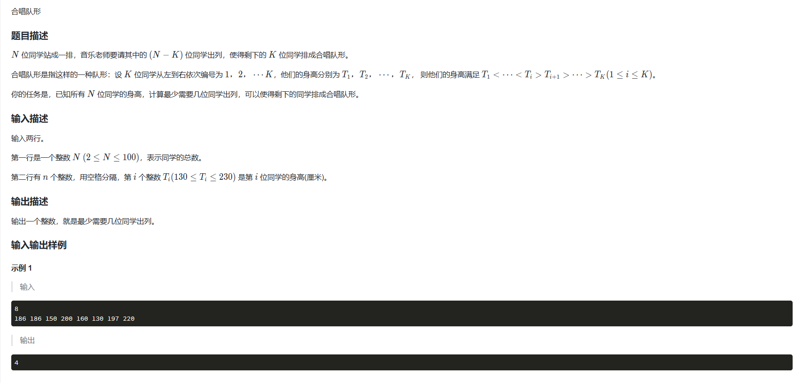

LIS算法模型
\(LIS\)(最长上升子序列)是一个经典的DP模型。
子序列指的是一个序列中，按照原顺序选出若干个不一定连续的元素所组成的序列。这里我们整理\(O(n^2)\)时间复杂度的朴素\(LIS\)模型，\(LIS\)还有一种利用二分实现的\(O(nlogn)\)时间复杂度的模型，大家可以自行去学习，理解起来略有难度。在求解\(LIS\)时，一般我们会设\(dp[i]\)表示1~i序列中以a[i]结尾的最长上升子序列的长度，状态转移方程为:
\[
if(a[i]>a[j]):dp[i]=max(dp[j]+1)
\] 表示\(a[i]\)要插入到不同子序列后面的情况。
例题1：蓝桥杯2049-蓝桥勇士
题目：

图片
代码：
1
2
3
4
5
6
7
8
9
10
11
12
13
14
15
16
17
18
19
20
21
22
23
24
25
26
27
| #include <iostream>
#include<math.h>
using namespace std;
int num[2000];
int dp[2000];
int main()
{
int n;
cin>>n;
for(int j=1;j<=n;j++)cin>>num[j];
int ans=0;
for(int j=1;j<=n;j++)
{
int Max=0;
dp[j]=1;
for(int k=1;k<j;k++)
{
if(num[j]>num[k])dp[j]=max(dp[j],dp[k]+1);
}
ans=max(ans,dp[j]);
}
cout<<ans<<endl;
return 0;
}
|
例题2：蓝桥杯742-合唱队形
题目：

图片
代码：
这个代码是分别从左到右求最长上升子序列\(dpl[]\)和从右到左求最长上升子序列\(dpr[]\)，然后根据这两个序列可求出满足合唱队最大的人数，再用所有的人数减去合唱队最大人数就是要求除去的最小人数。
1
2
3
4
5
6
7
8
9
10
11
12
13
14
15
16
17
18
19
20
21
22
23
24
25
26
27
28
29
30
31
32
33
34
35
36
37
38
39
40
41
| #include <iostream>
using namespace std;
const int N=120;
int dpl[N],dpr[N];
int n;
int num[150];
int main()
{
cin>>n;
for(int i=1;i<=n;i++)
{
cin>>num[i];
}
for(int i=1;i<=n;i++)
{
dpl[i]=1;
for(int j=0;j<i;j++)
{
if(num[i]>num[j])
dpl[i]=max(dpl[j]+1,dpl[i]);
}
}
for(int i=n;i>=1;i--)
{
dpr[i]=1;
for(int j=i;j<=n;j++)
{
if(num[i]>num[j])
dpr[i]=max(dpr[j]+1,dpr[i]);
}
}
int ans=0;
for(int i=1;i<=n;i++)
{
ans=max(dpl[i]+dpr[i]-1,ans);
}
cout<<n-ans<<endl;
return 0;
}
|